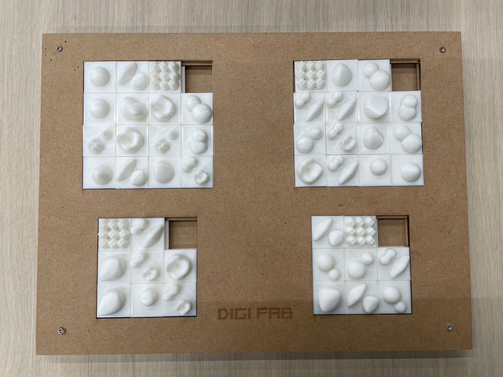
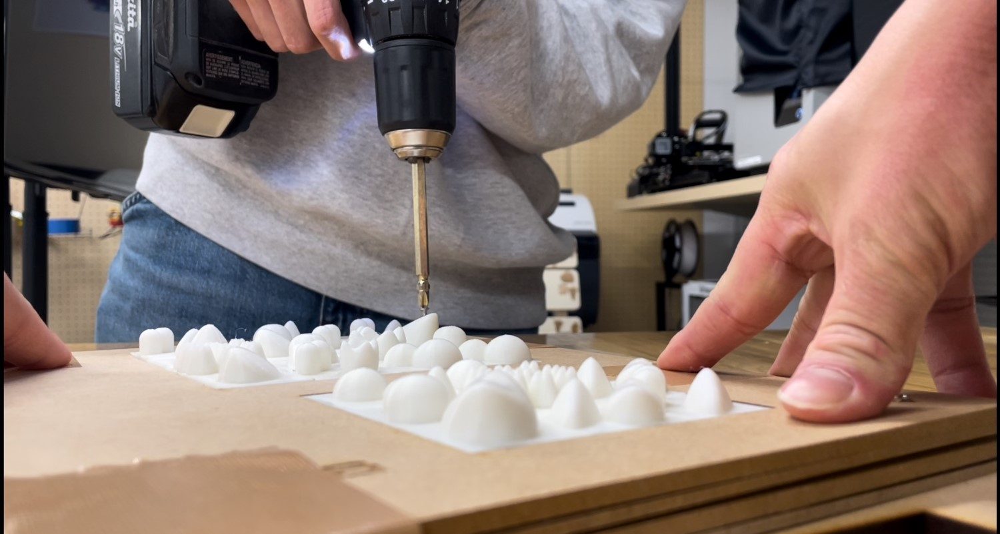
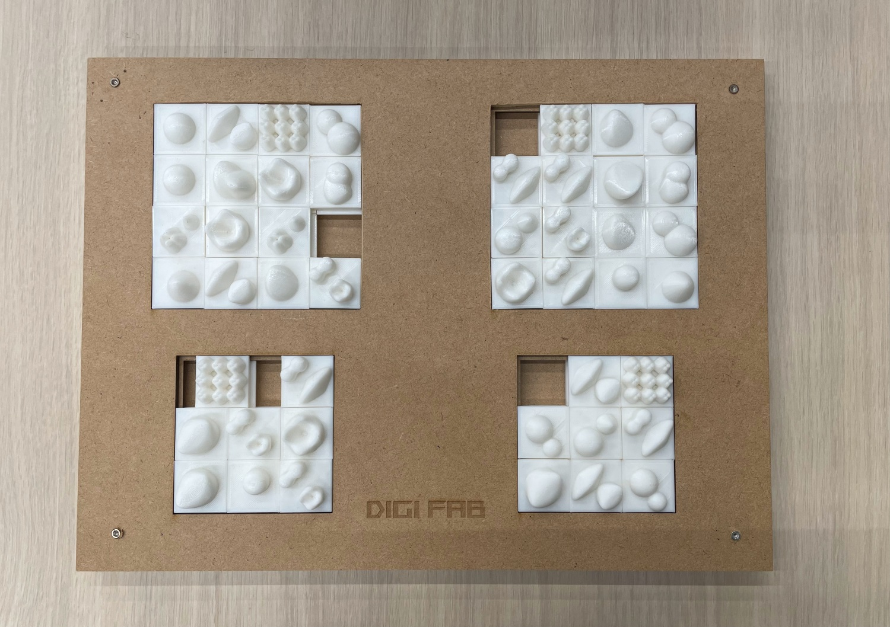
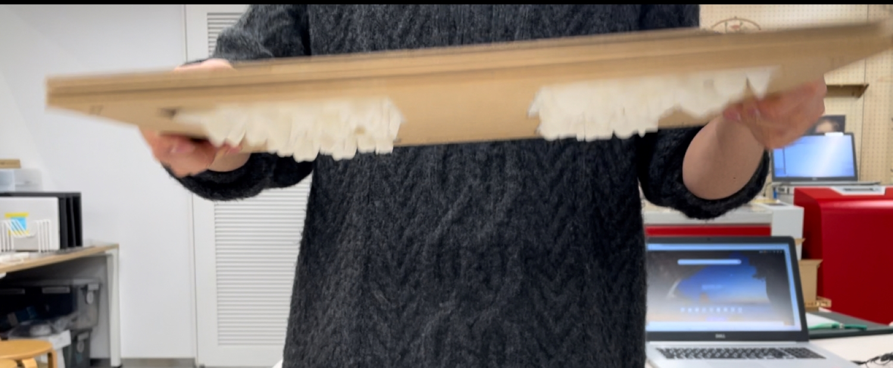

疲労に囚われていたとき、足つぼマットを作ろうと考えました。
ただそれだけでは面白くないです。
そこでふと、突起を自分で組み替えれたら面白いなと考えます。
ただ、突起パーツを別々にしたら一つは必ず消えます。これは避けられない未来。人間の性です。
結果、思い浮かんだのが「15パズル」という通称"スライドパズル"と呼ばれるものです。
この15パズルの構造を利用することによってパーツをなくす可能性がない、突起が組み換え可能な足つぼマットが出来ると確信しました。
①まず初めに15パズルの構造を調べました。まるで構造が理解出来ず虚無になっていたところ、下記のサイトを発見し理解出来ました。大感謝です。
参考サイト [15PUZZLE]
②その後、とりあえず突起パーツを試作しました。
③試作でかなり理想的なものが完成し、テンションがあがりました。その結果17種類の突起パーツが生まれました。
④その後MDFを使用し、１５パズルのようにスライド出来る枠組みをつくりました。
データをファブラボに置いてきたので回収次第、付け加えます。
⑤そして最後に、突起パーツがそれぞれスライドするか確認し、ネジで止めて完成です。

当初の狙いであった「突起が自分の好みで変えられる」をしっかりとクリアしながらも、パーツが外れない設計で逆さにしても落ちない代物です。
また、突起パーツが17種類あるため、自分の好きなパーツを見つけられることもポイントです。自分で欲しい部分に欲しいパーツをスライド出来る
足つぼマットとしてのクオリティーも高いです。


最終課題という名にふさわしい、"商品"に近いものが出来たと考えています。
二人で作ったことにより、突起パーツそれぞれに違う痛みが生まれ、この足つぼマットの良さを更に引き上げることが出来ました。
特に苦戦したのは、３Ｄプリンターの精度です。突起パーツはすべて３Ｄプリンターを使用していますが、それぞれ0.0数ミリ(?)ズレます。
これにより設計図通りＭＤＦに並べてもうまいことスライドしません。結果として誤差0.2mmだったものを1.3mmまで伸ばすことになりました。
今後、このような正確性を求められる物の時は気を付けなければいけないという教訓です。